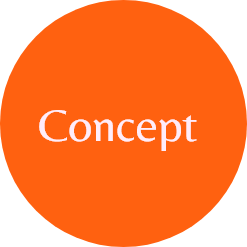

Het CBS kwam met de opdracht om hun data te visualiseren. We zijn aan de slag gegaan met de data over duurzaam eten. In ons ontwerp staat de vraag centraal: Eten we nu minder duurzaam dan vroeger? We hebben een multimedia story ontworpen om die vraag te beantwoorden. Ook proberen we mensen aan te sturen om beter over hun eten na te denken. Met ons project willen we Nederland en beterland maken. Als we zo door gaan dan loopt het niet goed af met ons land. We hebben dus niet alleen geprobeerd om de data te verwerken maar ook wat mee te geven aan de gebruiker.
In onze story staan opa Hugo en kleindochter Lisa centraal. Je zult het probleem op deze manier vanuit twee verschillende perspectieven zien. Zo kan iedereen zich er in vinden en zullen mensen het goed kunnen begrijpen. Lisa is een student dus wil alles snel en goedkoop, terwijl opa veel meer tijd heeft en alles doet zoals vroeger. Je volgt hun verhaal via een dialoog dat zich afspeelt in het huis van Hugo, waar ze samen gaan koken en eten.
Een duidelijk verhaal leren maken (storytelling).
Data verwerken in visuals.